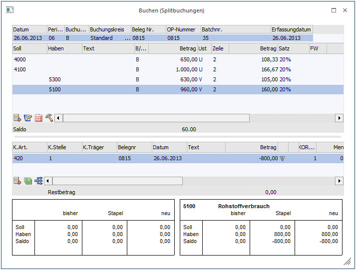
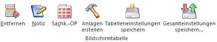
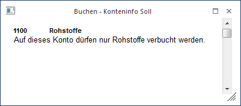

Im Menüpunkt
1 Buchen
1 Buchen
1 Splitbuchung
oder Schnellaufruf
1 STRG + 8
besteht die Möglichkeit, im Sachkontenbereich Soll- UND Habenbuchungen in EINER Splitbuchung einzugeben. Ein typisches Buchungsbeispiel dafür wäre z.B. die Kontierung der Lohnbuchungen am Monatsende.
In diesem Programmpunkt werden einfach untereinander - in der entsprechenden Soll- oder Habenspalte - die Sachkonten eingegeben, die einander im Split gegenüberstehen sollen. Das Programm setzt die Aufteilung so lange fort, bis die Summe Soll und die Summe Haben gemeinsam wieder den Saldo NULL ergeben. Erst dann kann die Buchung abgesetzt werden.
Achtung
In diesem Programmteil kann keine OP-Verwaltung (außer für Sachkonten) durchgeführt werden.

Das Fenster gliedert sich in 3 Teile:
ü Grundsätzlicher Informationsteil
ü Buchungsteil
ü Kostenrechnungsinformationsteil
Grundsätzlicher Informationsteil
Ø Datum/Periode
Zuerst muss das Buchungsdatum eingegeben werden. Aufgrund des Buchungsdatums wird auch die Buchungsperiode vorgeschlagen, die ggf. manuell überschrieben werden kann.
Ø Buchungsart
Die Buchungsart ist mit der Standard-Buchungsart (z.B. B) vorbelegt. Es können allerdings auch individuelle Buchungsarten verwendet werden. Abhängig von der Periode werden alle angelegten individuellen Buchungsarten mit dem Standard-Buchungsschlüssel B, EB oder AB angezeigt. Auch eine evtl. hinterlegte Nummernkreis aus der Buchungsart wird unterstützt (Mikrostapel-Einstellungen aus der Buchungsart allerdings nicht).
In der Auswahllistbox werden demnach alle Buchungsarten angezeigt, die
ü abhängig von der Periode den "richtigen" Buchungsschlüssel haben (0 - EB, 13 - AB, alle anderen - B),
ü kein Mikrostapel sind
ü das Flag "keine Steuer" nicht gesetzt haben und
ü für die der Benutzer die entsprechende Berechtigung hat.
Ø Beleg Nr.
Eingabe der Belegnummer. Die Belegnummer wird automatisch auf alle Splitbuchungszeilen dupliziert.
Ø Batchnr.
In diesem Feld kann eine sogenannte Batchnummer hinterlegt werden, die auch in allen anderen Buchungsprogrammen zur Verfügung steht. Dadurch können Buchungen zu einem "Belegkreis" zusammengefasst werden. Wurde einmal eine Batchnummer eingetragen und damit Buchungen durchgeführt, wird diese Batchnummer benutzerspezifisch und buchungsprogrammunabhängig gespeichert. Ruft also der gleiche Benutzer wieder ein Buchungsprogramm auf, wird die zuletzt hinterlegte Batchnummer vorgeschlagen. Die Batchnummer kann durch Drücken der + - Taste jeweils um 1 hochgezählt werden. In den FIBU-Parametern (WinLine START, Menüpunkt Optionen/FIBU-Parameter) kann gesteuert werden, dass diese Batchnummer automatisch hochgezählt wird.
Ø Erfassungsdatum
Hier wird das Einstiegsdatum vorgeschlagen. Damit könnten Sie nachvollziehen WANN eine Journalzeile tatsächlich erfasst worden ist. Für die Nachvollziehbarkeit der Erfassungsreihenfolge ist natürlich die vom System automatisch und unbeeinflussbar vergebene Prima Nota Nummer relevant. In WinLine START / Parameter / Applikationsparameter / FIBU-Parameter / Buchen kann für das Erfassungsdatum eingestellt werden, ob das Erfassungsdatum pro Stapel editierbar, pro Buchung editierbar oder nicht editierbar sein soll.
Nach Bestätigung des Erfassungsdatums mit der Enter-Taste gelangt man in den Buchungsteil. Hier können folgende Informationen eingegeben werden:
Ø Soll
Eingabe des Soll-Kontos. Durch Drücken der F9-Taste kann nach allen angelegten Konten gesucht werden.
Ø Haben
Eingabe des Haben-Kontos. Durch Drücken der F9-Taste kann nach allen angelegten Konten gesucht werden.
Ø Text
Eingabe des Buchungstextes. Der Buchungstext wird automatisch auf alle Splitbuchungszeilen dupliziert. Zusätzlich dazu kann zu jeder Buchungszeile durch Anklicken des Notiz-Buttons ein beliebig langer Buchungstext erfasst werden.
Ø B/N.
Hier wird hinterlegt, wie der Buchungsbetrag erfasst wird:
B - Brutto: Der Betrag wird inkl. Steuer
eingegeben.
N - Netto: Der Betrag wird exkl. Steuer
eingegeben.
FB / FN - Fremdwährung: Der Betrag kann in Fremdwährung
erfasst werden und wird in Landeswährung umgerechnet. Voraussetzung dafür ist,
dass die entsprechende Lizenz vorhanden ist.
Ø Betrag
Eingabe des Buchungsbetrages für das eingetragene Konto
Durch Drücken der F9-Taste oder Anklicken des -Buttons wird das Umrechnungsfenster geöffnet, in dem der Betrag auf Basis der im Mandantenstamm hinterlegten Landeswährungen (z.B. EURO) eingegeben werden kann. Zum Buchen wird dann der Betrag in Landeswährung 1 verwendet.
Zusätzlich können noch die Felder Steuerzeile und Steuerbetrag bearbeitet werden.
Wurde der Aufteilungsbetrag zur Gänze aufgeteilt, kann die Buchung abgesetzt werden.
Kostenrechnungsinformation
Wird ein Konto angewählt, bei dem eine Kostenart hinterlegt wurde, wird die Kostenrechnungsinformation angezeigt. Nach Eingabe des Betrages kann durch Drücken der Pfeil-nach-Unten-Taste in die Tabelle für die Kostenerfassung gewechselt werden.
Dabei können folgende Felder bearbeitet werden:
Ø K.Art
Eingabe der Kostenart, max. 20stellig, alphanumerisch. Die Kostenart, die bei dem angesprochenen Sachkonto hinterlegt wurde, wird vorgeschlagen und kann ggf. editiert werden. Wird eine Einzelkostenart angewählt, kann auch ein Kostenträger angesprochen werden. Bei Eingabe einer Gemeinkostenart bleibt das Aufteilungsfeld K.Träger/Proj für die Aufteilung gesperrt.
Ø K.Stelle
Eingabe der Kostenstellennummer, der der Betrag zugeordnet werden soll.
Ø K.Träger
Eingabe der Kostenträgernummer (Achtung: nur bei Einzelkosten möglich).
Hinweis
Nach Eingabe des Kostenträgers wird geprüft, ob das Buchungsdatum auch innerhalb der Laufzeit des Kostenträgers liegt. Ist das nicht der Fall, wird eine entsprechende Meldung ausgegeben, die Buchung kann aber trotzdem weiter erfasst werden.

Ø Belegnr
Belegnummer, max. 20stellig, alphanumerisch. Die Belegnummer wird aus der zuvor erfassten Buchungszeile vorgeschlagen und kann ggf. editiert werden.
Ø Datum
Eingabe des Buchungsdatums, wird aus der Buchungszeile übernommen.
Ø Text
Buchungstext, max. 25stellig, alphanumerisch, wird ebenfalls aus der Buchungszeile übernommen.
Ø Betrag
Wenn im Feld % ein Prozentsatz eingegeben wurde, füllt das Programm das Betragsfeld automatisch mit dem errechneten Wert aus. Dieser Betrag kann auch manuell eingegeben werden. Durch Drücken der F3-Taste wird der noch nicht aufgeteilte Betrag automatisch übernommen.
Durch Anklicken des - Buttons wird, sofern der KORE-Betrag nicht zur Gänze aufgeteilt wurde, eine neue KORE-Zeile erstellt, die die gleichen Werte enthält, wie die Zeile, von der aus der Button betätigt wurde.
Das Symbol informiert Sie über eine vorgenommene KORE-Aufteilung.
Ø Menge
Eingabe der Anzahl der in der Kostenart hinterlegten Mengeneinheit.
Ø Einheit
Anzeige der im Kostenartenstamm hinterlegten Einheit (Stunden, Kilometer, etc.).
Ø Var.
Der Variator, der in der Kostenart für diese Kostenstellengruppe hinterlegt worden ist, wird automatisch aufgrund der aktuellen Kostenart vorgeschlagen, kann aber manuell übersteuert werden.
In der Tabelle können dann beliebig viele Kostenerfassungszeilen eingegeben werden, wobei der Buchungsbetrag zur Gänze aufgeteilt werden muss.
Ø Sollkonto
Hier wird das Sollkonto aus der korrespondierenden Sachbuchungszeile angezeigt.
Ø Habenkonto
Hier wird das Habenkonto aus der korrespondierenden Sachbuchungszeile angezeigt.
Ø %
Geben Sie ein, welcher Prozent-Anteil des im Feld Betrag eingetragenen Gesamtbetrages dieser Kostenstelle (diesem Kostenträger) zugeordnet werden soll. Das Feld kann auch einfach (mit ENTER) übergangen werden, wenn Sie den Teilbetrag direkt im darauffolgenden Feld eintragen möchten.
Solange der Gesamtbetrag nicht zur Gänze aufgeteilt ist, kann die Aufteilung nicht verlassen werden (Meldung: Der Buchungsbetrag wurde nicht zur Gänze aufgeteilt). Im Feld Restbetrag wird der noch aufzuteilende Wert angezeigt.
Informationsfelder
Ø FW
Wurde die Buchung in einer Fremdwährung erfasst, wird hier der verwendete Fremdwährungscode angezeigt. Dieser kann nicht verändert werden.
Ø FW-Betrag
Der Netto-Fremdwährungsbetrag wird angezeigt.
Ø Kostenart
Auf welche Kostenart erfolgt die Aufteilung, die gerade bearbeitet wird.
Ø Kostenstelle
Auf welche Kostenstelle erfolgt die Aufteilung, die gerade bearbeitet wird.
Ø Kostenträger
Auf welchen Kostenträger erfolgt die Aufteilung, die gerade bearbeitet wird.
Wurde der KORE-Betrag zur Gänze aufgeteilt, kann die KORE-Erfassung durch Drücken der Pfeil-nach-Unten-Taste verlassen werden.
Buttons

Ø Buchen
Durch Anklicken dieses Buttons oder F5 werden alle eingegebenen Informationen gespeichert und verbucht.
Ø Ende
Dadurch wird das Fenster geschlossen, alle eingegebenen und nicht verbuchten Informationen gehen verloren.
Ø Abbruch
Dadurch werden alle erfassten Informationen gelöscht, es kann ein neuer Buchungsvorgang erfasst werden.
Ø Laden
Lädt einen vorher gespeicherten Stapel.
Ø Speichern
Speichert einen neu erstellten Stapel.
Ø Kontoblatt
Dadurch wird ein Kontoblatt aller in den Buchungen vorhandener Konten angezeigt. Dabei werden die erfassten Buchungen und der daraus resultierende Saldo ausgewertet.
Ø Saldenliste
Durch Betätigen des Saldenliste-Buttons wird eine neue Liste geöffnet, in der für die im Stapel verwendeten Konten der alte Saldo, die Summen der Buchungen und der entsprechende neue Saldo angezeigt werden.
Ø Journal
Hier werden die erfassten Buchungen mit allen möglichen Ausprägungen (Faktura, Kostenrechnungsinfo) angezeigt.
Ø Konteninfo
Es werden jeweils die im Kontenstamm hinterlegten Informationen (Notiz) zu dem Soll- und dem Haben-Konto angezeigt.
Ø Freigabe
Durch Drücken dieses Buttons wird das Freigabefenster geöffnet, um den Freigabestatus einer Buchung verändern zu können.
Tabellenbuttons Buchen

Ø Entfernen
Damit kann die Gegenbuchung gelöscht werden, die gerade aktiv ist (in der Buchungszeile muss der Focus gesetzt sein).
Ø Notiz
Durch Anklicken des Notiz-Buttons kann ein beliebig langer Buchungstext erfasst werden. Dieser kann auch bei den diversen Auswertungen angedruckt werden.
Ø Sachkonten-OP
Durch Anwahl des Buttons "Sachk.-OP" kann eine OP-Verwaltung für Sachkonten durchgeführt werden. Voraussetzung dafür ist, dass das Sachkonto entsprechend angelegt wurde.
Ø Anlagen erstellen
Sind bei Splitbuchungen Anlagenkonten (bspw. im Soll) betroffen, so kann noch während der Buchung mittels dieses Buttons in den Anlagenstamm gewechselt und der Neuzugang angelegt werden.
Nach Schließen des Anlagenstammfensters gelangt man wieder zum ursprünglichen Buchen-Fenster zurück.
Ø Tabelleneinstellungen speichern
Die Spalten einer Tabelle können grundsätzlich an beliebige Positionen verschoben, bzw. in der Breite entsprechend angepasst werden. Durch Anwahl des Buttons "Tabelleneinstellungen speichern" werden die Einstellungen benutzerspezifisch gespeichert und bei dem nächsten Aufruf des Programmpunktes wieder vorgeschlagen.
Ø Gesamteinstellungen speichern
Im Gegensatz zu "Tabelleneinstellungen speichern" können mit "Gesamteinstellungen speichern" mehrere Tabellenaufbauten gespeichert und nach Wunsch geladen werden. Zusätzlich werden Sonderfunktionen der Tabelle (z.B. "Spalte gruppieren") ebenfalls bei der Speicherung bedacht.
Tabellenbuttons KORE

Ø Entfernen
Damit wird die angewählte KORE-Zeile gelöscht.
Ø KORE wiederherstellen
Beschreibung zur KORE-Wiederherstellen finden Sie im Abschnitt 3.2 - Buchen (Dialog-Stapel)
Ø Aufteilen
Beschreibung zur KORE-Aufteilen finden Sie im Abschnitt KORE-Periodenaufteilung.
Ø Verteilungsschlüssel auswählen
Ist eine Kostenart mit einem Verteilungsschlüssel eingetragen, öffnet sich durch einen Doppelklick auf diesen Button das Fenster "Buchen - Auswahl Kostenarten-Verteilungsschlüssel". In diesem Fenster werden die ausgewählte Kostenart mit Nummer und Bezeichnung, sowie die Buchungsnummer und das Buchungsdatum zur Info angezeigt. Über die Combobox "Verteilungsschlüssel" kann ein anderer im Kostenartenstamm zu dieser Kostenart hinterlegter Verteilungsschlüssel oder kein Verteilungsschlüssel ausgewählt werden.
Wird ein anderer Verteilungsschlüssel ausgewählt und mit dem Button OK oder der F5-Taste bestätigt, werden die neuen Verhältniszahlen entsprechend berechnet und die Angaben in der KORE-Tabelle geändert.
Ø Ausgabe Excel
Durch Anwahl des Buttons "Ausgabe Excel" wird der Inhalt der Tabelle nach Microsoft Excel übergeben.

Ø Tabelleneinstellungen speichern
Die Spalten einer Tabelle können grundsätzlich an beliebige Positionen verschoben, bzw. in der Breite entsprechend angepasst werden. Durch Anwahl des Buttons "Tabelleneinstellungen speichern" werden die Einstellungen benutzerspezifisch gespeichert und bei dem nächsten Aufruf des Programmpunktes wieder vorgeschlagen.
Ø Gesamteinstellungen speichern
Im Gegensatz zu "Tabelleneinstellungen speichern" können mit "Gesamteinstellungen speichern" mehrere Tabellenaufbauten gespeichert und nach Wunsch geladen werden. Zusätzlich werden Sonderfunktionen der Tabelle (z.B. "Spalte gruppieren") ebenfalls bei der Speicherung bedacht.
Zusätzliche Optionen
Ø Prot. drucken
Diese Checkbox hat nur in Zusammenhang mit dem JOURNAL-Button eine Funktion: Ist die Checkbox aktiviert und wird der Journal-Button angeklickt, erfolgt automatisch eine Prüfung aller im Stapel erfasster Buchungen auf ihre Richtigkeit. Sollten Fehler vorhanden sein, werden diese gleich in einem Prüfprotokoll ausgegeben. Dabei wird der gerade eingestellte Drucker verwendet.
Ø Konteninfo
Wird dieser Button gedrückt (dieser kann bereits durch die Einstellung aus den Fenstern "Buchen Dialog Stapel", "Buchen Ausgangsrechnungen", "Buchen Zahlungsmittelkonten" oder "Buchen Splitbuchungen" gedrückt sein), werden eigene Fenster für die Konteninfos geöffnet. Dabei gibt es jeweils ein Fenster für das Soll- und ein Fenster für das Habenkonto.

Welche Informationen angedruckt werden sollen, kann frei definiert werden. (Siehe auch Kapitel Buchen - Konteninfo Soll bzw. Kapitel Buchen - Konteninfo Haben.)
Ø Freigabe
Mit dem Button "Freigabe" kann ein Buchungsstapel freigegeben oder gesperrt werden.